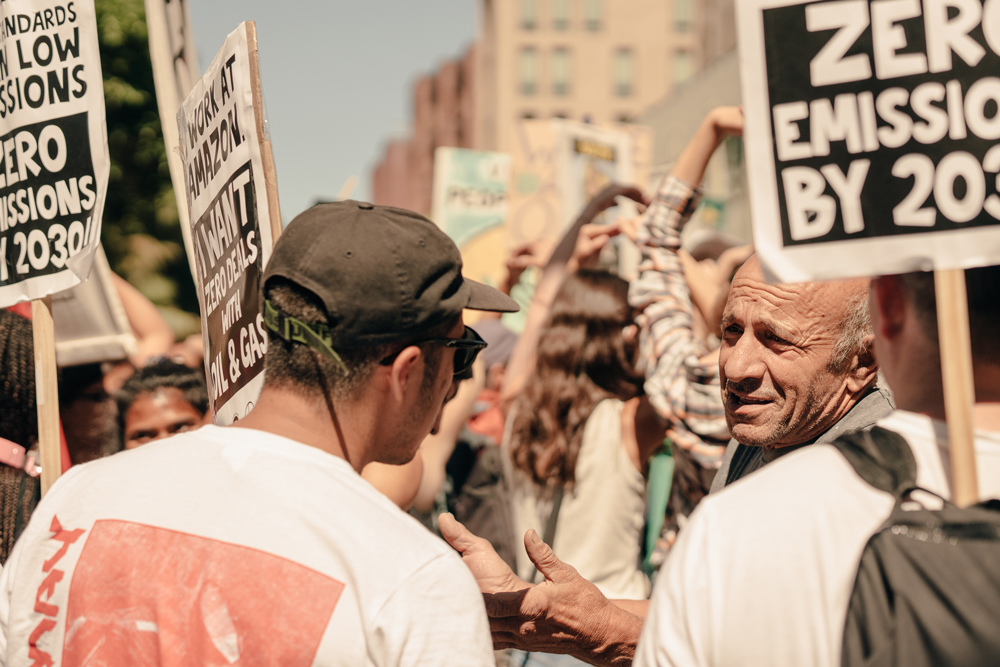
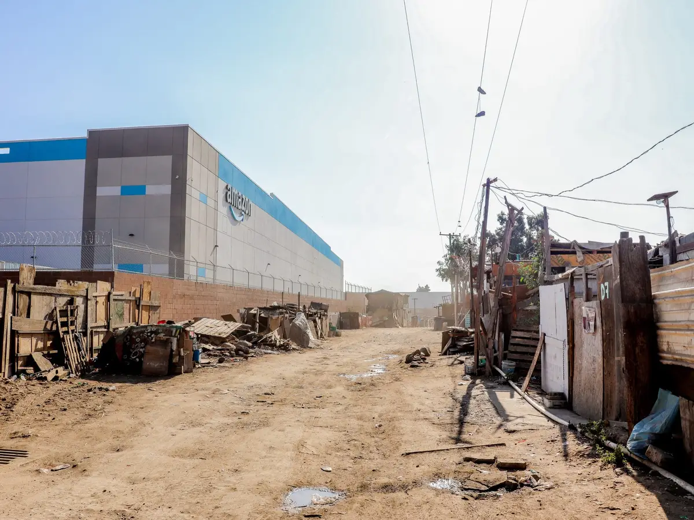

While working at Twitch, an Amazon owned company, I became actively involved with Amazon Employees for Climate Justice (AECJ), a collective of workers demanding stronger environmental policies across Amazon’s vast operations. From my position in tech, I saw how Amazon’s business decisions weren’t just about innovation or efficiency—they had real consequences for the planet and for people in frontline communities.
In September 2019, I joined thousands of Amazon employees in a walkout to protest the company’s environmental policies. We knew that for all of Amazon’s sustainability rhetoric, it remained one of the world’s largest corporate polluters.
Amazon employees are deeply concerned about the climate crisis, and we see how it's impacting our lives. ∼ myself, Business Insider, Inc, One Green Planet
That pressure worked. Shortly after, Amazon announced The Climate Pledge, committing to net-zero carbon emissions by 2040; 10 years ahead of the Paris Agreement. The company promised to transition to 100% renewable energy by 2025 and to purchase 100,000 electric delivery vehicles. But those of us in AECJ knew that pledges alone weren’t enough. A company that profits from fossil fuel contracts and operates a supply chain that disproportionately harms low income communities cannot simply buy its way into sustainability.
In January 2020, Amazon’s legal and HR departments sent warnings to me and my fellow AECJ organizers, telling us to stop speaking out. But I refused to be silent.
Throughout history, change has happened only after brave people spoke out, even when at risk to themselves.∼ myself, Geek Wire, Wired
I understood the risks, but I also knew that change never comes without resistance.
Working at Twitch gave me a unique perspective within Amazon. While my job in tech insulated me from some of the company’s harsher labor conditions, I saw how Amazon’s warehouse workers, who make Amazon’s fast delivery ecosystem possible, were being exploited. Many of them worked in extreme heat, under relentless quotas, and with little job security. It was clear to me that Amazon’s environmental and labor issues were deeply connected.
You cannot buy the revolution. You cannot make the revolution. You can only be the revolution. It is in your spirit, or it is nowhere.∼ Diane di Prima
I took that to heart. If Amazon was going to change, it wouldn’t be because of corporate pledges or shareholder decisions alone. It would be because workers across all levels, from warehouses to tech offices, demanded it.
That’s why I used my position to amplify the voices of frontline communities suffering from Amazon’s pollution and warehouse expansion. Black, Indigenous, and People of Color (BIPOC) communities are the ones breathing in the diesel fumes from Amazon’s supply chain while executives celebrate their sustainability goals. AECJ fought to expose these injustices and push for real accountability.
No one way works, it will take all of us shoving at the thing from all sides to bring it down.∼ Diane di Prima, Revolutionary Letter #8
That’s how I approached this fight. At Twitch, I spoke out against Amazon’s environmental harm and the way it treated its workers. I used my voice alongside warehouse employees, climate activists, and fellow tech workers to demand real change.
Amazon tried to silence us, but I refuse to accept business as usual.
The war that matters is the war against the imagination. All other wars are subsumed in it.∼ Diane di Prima
I still refuse to let Amazon define what is possible. A better future exists, not in corporate statements, but in the voices of those who continue to push for justice. We will not stop.